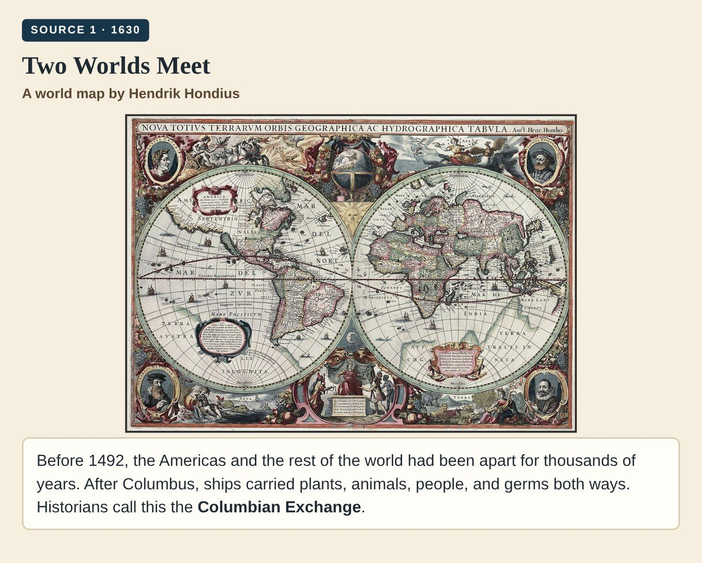

How it works: read the source pages → answer the question about today's big idea → read the fact file → write 1–2 sentences. Done = all parts green, then turn in at the bottom.
Word help (tap to open)
- Columbian Exchange = plants, animals, people, and germs moving between the Americas and the rest of the world after 1492
- Immunity = the body's built-up defense against a germ
- Calories = the energy in food
- Narragansett (nair-uh-GAN-sit) = a Native nation in today's Rhode Island
- Primary source = something made by people who lived at the time: a letter, a speech, a picture, a law

Click the page to make it bigger.
Turn in your work
Your work saves on this device, so you can come back later. Your teacher sees it after you turn it in.
Sources: Hendrik Hondius world map (1630); John Gerard, Herball (1597); George Catlin, Comanche Feats of Horsemanship (1834–35); Florentine Codex (1500s); Miantonomo's speech as recorded by Lion Gardiner (written 1660); print of a West Indies sugar works (Library of Congress). Images public domain, via Wikimedia Commons.